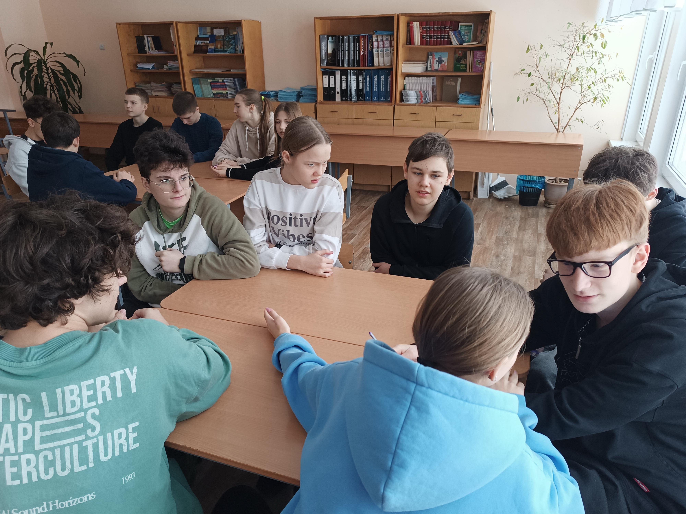
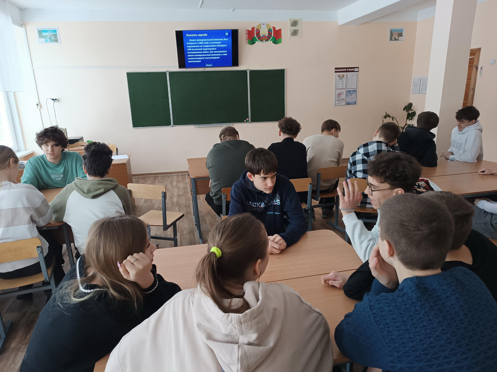
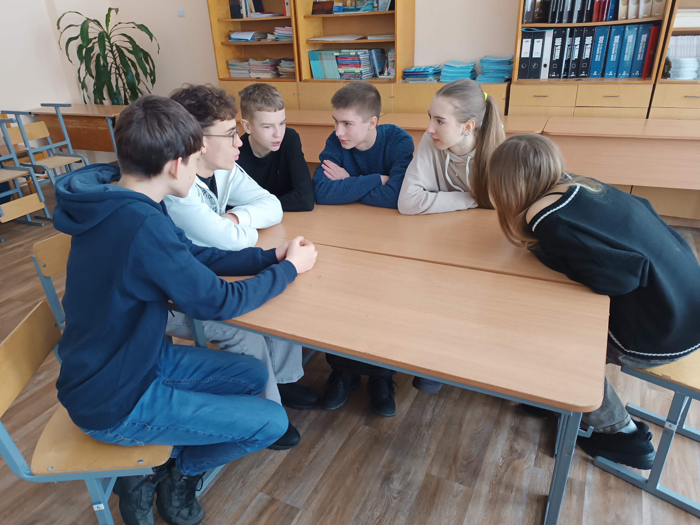

ГЕРОИ – МОЙ КОМПАС ЗЕМНОЙ
7 февраля учащиеся 9-х классов Государственного учреждения образования «Гимназия №1 г. Борисова» приняли участие в эрудит-турнире «Герои – мой компас земной», посвященном героическому прошлому белорусского народа в годы Великой Отечественной войны.
В начале турнира ребята выбрали названия команд и капитанов.

Команда 9 «А» класса «Подпольщики» выбрала своим капитаном Григорьева Максима, 9 «Б» «Герои» – Скачка Андрея, 9 «В» «Знамя» – Евдокимова Михаила и 9 «Г» «Патриоты» – Альшевского Владислава.
Структурно все вопросы турнира были распределены по пяти темам: «Освобождение Белоруссии», «Память народа», «Беларусь – партизанская», «Пионеры-герои» и «Улицы Борисова». В качестве особенности игры наводящие вопросы включали в себя малоизвестные исторические факты, которые заставляли участников не только проявить свои знания, но и включать логическое мышление.

Начальный этап игры сразу же определил трех лидеров. Ими стали команды «Подпольщики», «Патриоты» и «Знамя». Вместе с тем, несколько непростительных ошибок лишили команду «Знамя» возможности составлять конкуренцию «Подпольщикам» и «Патриотам».
По итогам турнира призовые места заняли: команда 9 «А» класса – 1 место, с незначительным перевесом в 10 баллов она обошла команду 9 «Г» класса, команда 9 «В» класса заняла 3 место.
